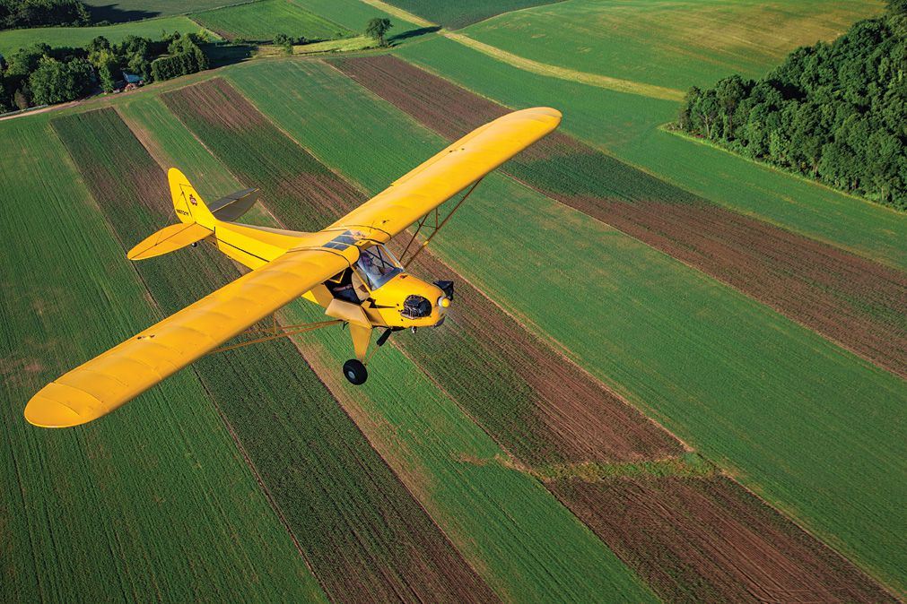
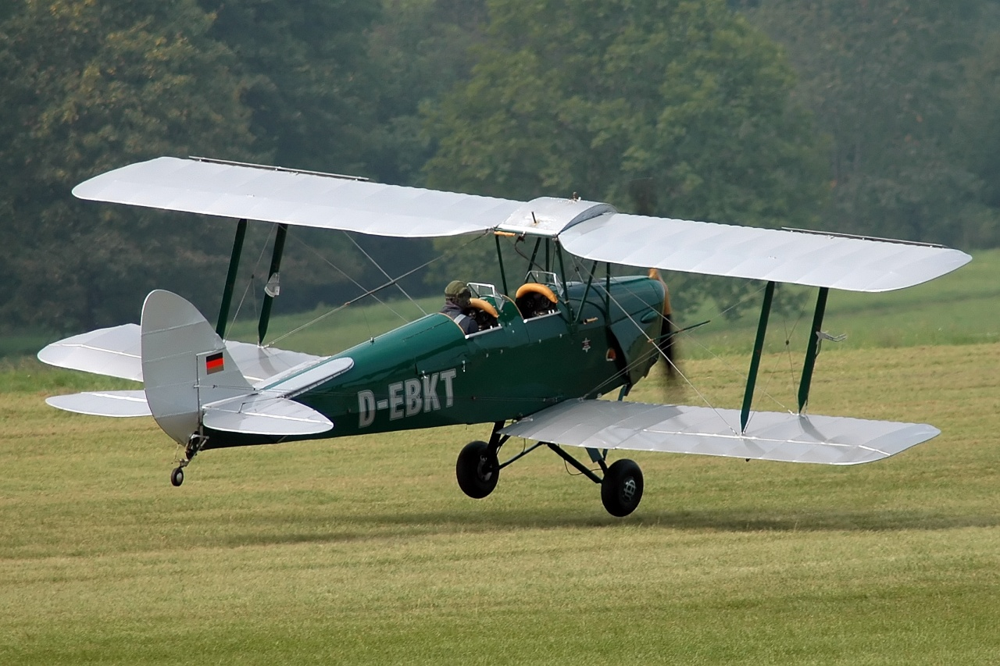

Plane - airplane
An airplane or aeroplane (informally plane) is a fixed-wing aircraft that is propelled forward by thrust from a jet engine, propeller, or rocket engine. Airplanes come in a variety of sizes, shapes, and wing configurations. The broad spectrum of uses for airplanes includes recreation, transportation of goods and people, military, and research. Worldwide, commercial aviation transports more than four billion passengers annually on airliners[1] and transports more than 200 billion tonne-kilometers[2] of cargo annually, which is less than 1% of the world’s cargo movement.[3] Most airplanes are flown by a pilot on board the aircraft, but some are designed to be remotely or computer-controlled such as drones.
The Wright brothers invented and flew the first airplane in 1903, recognized as “the first sustained and controlled heavier-than-air powered flight”.[4] They built on the works of George Cayley dating from 1799, when he set forth the concept of the modern airplane (and later built and flew models and successful passenger-carrying gliders).[5] Between 1867 and 1896, the German pioneer of human aviation Otto Lilienthal also studied heavier-than-air flight. Following its limited use in World War I, aircraft technology continued to develop. Airplanes had a presence in all the major battles of World War II. The first jet aircraft was the German Heinkel He 178 in 1939. The first jet airliner, the de Havilland Comet, was introduced in 1952. The Boeing 707, the first widely successful commercial jet, was in commercial service for more than 50 years, from 1958 to at least 2013.

Etymology and usage
First attested in English in the late 19th century (prior to the first sustained powered flight), the word airplane, like aeroplane, derives from the French aéroplane, which comes from the Greek ἀήρ (aēr), “air”[6] and either Latin planus, “level”,[7] or Greek πλάνος (planos), “wandering”.[8][9] “Aéroplane” originally referred just to the wing, as it is a plane moving through the air.[10] In an example of synecdoche, the word for the wing came to refer to the entire aircraft.
In the United States and Canada, the term “airplane” is used for powered fixed-wing aircraft. In the United Kingdom and most of the Commonwealth, the term “aeroplane” (/ˈɛərəpleɪn/[10]) is usually applied to these aircraft.
Piper Cub

Dh 82

Plane